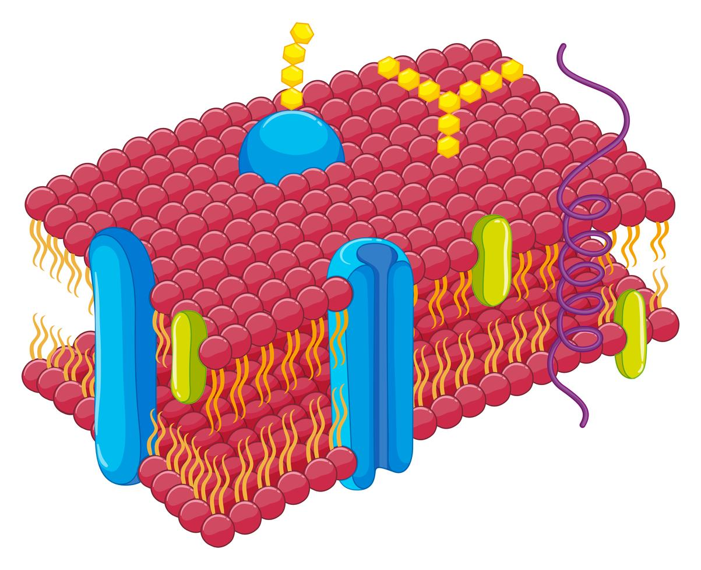

O que é a Membrana Plasmática?
A membrana plasmática é uma estrutura que envolve todas as células, agindo como uma barreira que separa o interior celular do ambiente externo. É composta principalmente por uma bicamada lipídica com proteínas embutidas, que permitem a comunicação e o transporte de substâncias. Esta organela é vital para a homeostase celular e desempenha um papel fundamental em várias funções celulares.
A membrana plasmática também é conhecida como membrana celular ou membrana citoplasmática. Ela não apenas protege a célula, mas também participa ativamente na regulação de substâncias que entram e saem, garantindo que as condições internas sejam mantidas de maneira adequada.
Estrutura da Membrana Plasmática
A estrutura da membrana plasmática é descrita pelo modelo do mosaico fluido, que destaca a flexibilidade e a diversidade de componentes presentes. Essa estrutura permite que a membrana se adapte a diferentes condições e funções.
- Bicamada Lipídica: Formada por fosfolipídios, com cabeças hidrofílicas voltadas para o exterior e caudas hidrofóbicas voltadas para o interior. Esta organização é fundamental para a impermeabilidade da membrana em relação a substâncias hidrossolúveis.
- Proteínas de Membrana: Proteínas que podem ser integrais (atravessam a membrana) ou periféricas (associadas à superfície), desempenhando funções de transporte, sinalização e estrutura. Algumas dessas proteínas atuam como canais ou transportadores, facilitando a movimentação de íons e moléculas.
- Carboidratos: Muitas vezes ligados a proteínas ou lipídios, formam glicoproteínas e glicolipídios, que são importantes para o reconhecimento celular e interação com o ambiente. Esses carboidratos desempenham um papel crucial na comunicação entre células e no sistema imunológico.
Funções da Membrana Plasmática
A membrana plasmática desempenha várias funções cruciais:
- Barreira Seletiva: Controla a passagem de substâncias, permitindo a entrada de nutrientes essenciais e a saída de resíduos e toxinas. Isso é fundamental para a manutenção da saúde celular.
- Comunicação Celular: Contém receptores que respondem a sinais químicos do ambiente, permitindo que a célula reaja a mudanças. Esse processo é vital para a coordenação de funções celulares e respostas a estímulos externos.
- Manutenção da Homeostase: Regula o equilíbrio interno da célula, ajustando a concentração de íons e outras moléculas. Isso inclui a manutenção do pH, da temperatura e da concentração de eletrólitos.
- Transporte Ativo e Passivo: A membrana permite tanto o transporte passivo (sem gasto de energia) quanto o transporte ativo (que requer energia) de substâncias, adaptando-se às necessidades da célula.
Importância da Membrana Plasmática na Saúde Celular
A integridade e a funcionalidade da membrana plasmática são essenciais para a saúde celular. Disfunções podem levar a problemas como:
- Doenças Metabólicas: Alterações na permeabilidade da membrana podem afetar o metabolismo celular e levar a doenças como diabetes e obesidade.
- Infecções: Patógenos podem explorar falhas na membrana para entrar na célula, resultando em infecções e doenças. Por exemplo, muitos vírus se ligam a receptores específicos na membrana para infectar as células.
- Câncer: Células cancerosas frequentemente apresentam alterações na composição da membrana, afetando a sinalização e o crescimento celular. Essas alterações podem permitir que as células cancerosas proliferem de maneira descontrolada.
- Doenças Autoimunes: O reconhecimento inadequado de componentes da membrana pode levar a respostas imunes inadequadas, resultando em doenças autoimunes onde o corpo ataca suas próprias células.